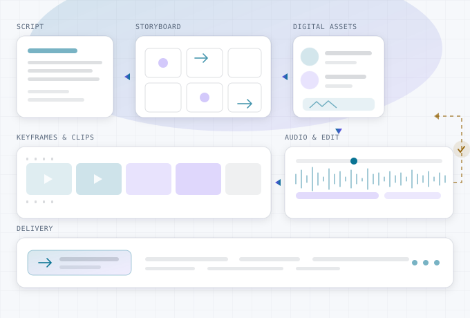

HelpEnx Studiostudio.helpenx.com
进入 AIGC Studio 短剧 AI 生产编排台
从创意、剧本到成片的全链路多 Agent 编排：自动完成分集分场、分镜脚本、关键帧、视频片段与配音剪辑，并把角色、场景、道具、模型等数字资产统一沉淀为可复用资产库——换一部剧不必从零重画，跨镜头、跨集保持同一张脸、同一个空间。一致性记忆与自动质检把返工压到最低，整集可一键生成，也可以在任意节点人工介入、用对话直接改写——例如「把第 3 场第 2 镜改成仰拍，时长缩到 4 秒」。

创意 / 剧本分集分场分镜脚本数字资产 · 角色 / 场景 / 模型关键帧视频片段配音 · 口型 · BGM剪辑合成
- 角色 / 场景 / 模型资产库
- 多模型路由与降级
- 跨镜头跨集一致性
- 自动质检与返工
- 断点续跑与配额调度
- Tool / MCP / API 开放
- 可用率与成本指标